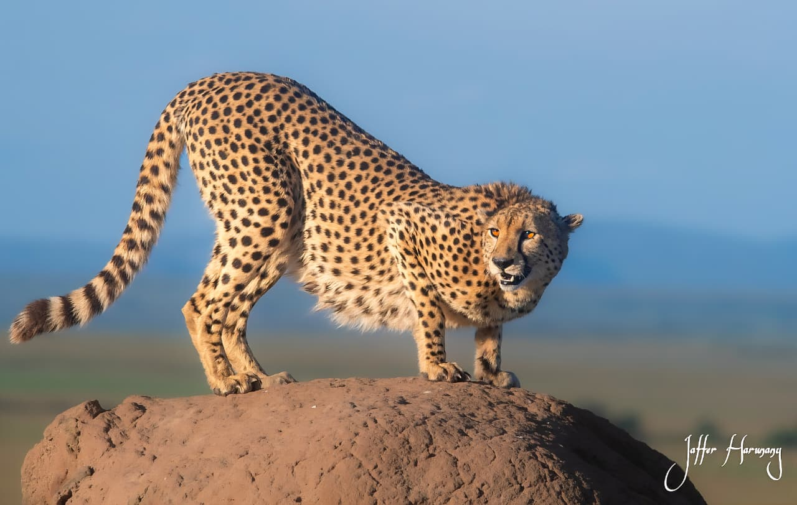
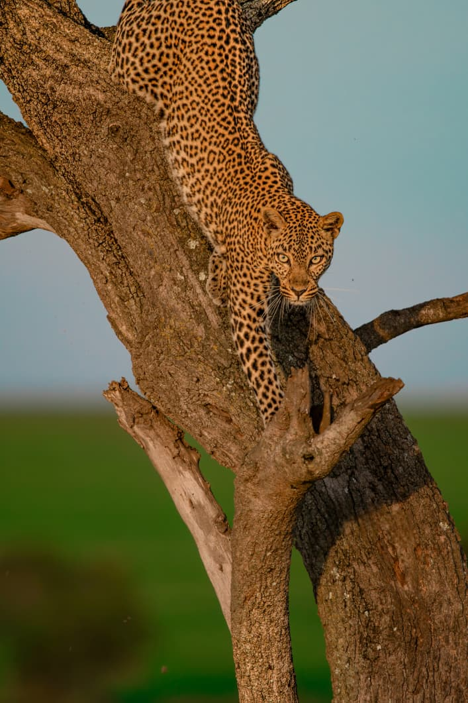

Almanara Luxury Resort
Private villas, attentive service and a relaxed beachfront setting.

White sands, warm Indian Ocean waters and relaxed coastal luxury.
Diani Beach is a stretch of powder-white sand on Kenya's southern coast. Close to coral reefs, forested islands and intimate coastal lodges, it offers a calm and restorative counterpoint to the intensity of the bush.
Your coastal finish
Private villas, attentive service and a relaxed beachfront setting.

An intimate boutique retreat designed for slow coastal days.

Swahili-inspired architecture, gardens and Indian Ocean access.

A characterful, low-key coastal hideaway for a more private escape.
December–March and July–October are especially pleasant; the coast is warm year-round with short rains in April–May.
Fly from Nairobi to Diani's Ukunda airstrip or combine with a private transfer from inland safaris a short domestic flight completes the bush-to-beach transition.
See Bush-to-Beach itineraries